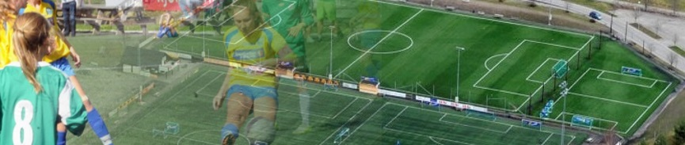

Cuper
Storhamar Fotball har lang erfaring og får mye gode tilbakemeldinger fra de som deltar på våre cuper. Om ditt lag ønsker å delta på en cup trenger du ikke lete lenger! Storhamar Fotball arrangerer hvert år hele 10 cuper hvorav den største er Maxiturneringen med over 260 lag fra mer enn 70 klubber.
